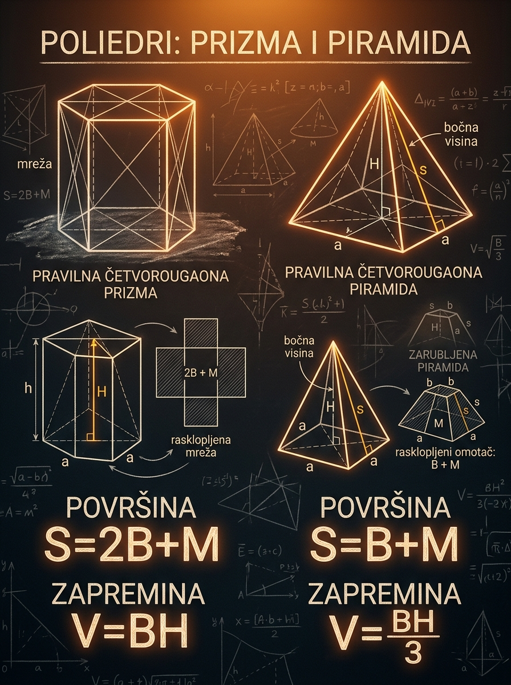

Šta ćeš naučiti
Kako da iz mreže dobiješ formule za ukupnu površinu i kako da za svako telo prepoznaš koja visina ulazi u zapreminu.
Ova lekcija te vodi kroz prizme, piramide i zarubljene piramide tako da formule ne učiš napamet, nego iz mreže, preseka i jasne slike tela. Glavni cilj je da na prijemnom odmah razlikuješ šta je površina baze \(B\), šta je obim baze \(O_b\), šta je prava visina \(H\), a šta bočna visina \(s\) ili bočna ivica.
Kako da iz mreže dobiješ formule za ukupnu površinu i kako da za svako telo prepoznaš koja visina ulazi u zapreminu.
Da u kosoj prizmi ili pravilnoj piramidi pomešaš pravu visinu \(H\) sa bočnom ivicom ili bočnom visinom \(s\).
Prepoznavanje tipa tela, brz obračun preko baze i pravog preseka, i disciplina da površinu računaš preko lica, a ne preko „lične intuicije“.

Na prijemnom stereometrijski zadatak često izgleda zastrašujuće samo zato što je u prostoru. U stvarnosti, većina poena se osvaja time što pravilno protumačiš figuru i prevedeš je na poznate ravanske površine i pravu visinu.
Kada umeš da izdvojiš bazu, bočna lica i osni presek, telo prestaje da bude komplikovan 3D objekat i postaje zbir poznatih 2D figura. To je osnovna veština stereometrije.
Ako zapamtiš samo ovu ideju, mnogo teže ćeš napraviti tipične greške: da u zapreminu ubaciš bočnu ivicu ili da u površini zaboraviš jednu bazu ili pomešaš obim i površinu.
Vrlo često se prava nepoznata ne nalazi direktno na telu, nego u preseku: trougao kroz visinu piramide, pravougaonik na mreži prizme ili slični trouglovi kod zarubljene piramide.
U stereometriji najveći broj grešaka ne nastaje u računu, već u pogrešnom imenovanju delova tela. Zato prvo raščistimo jezik: šta je poliedar, šta su baze, šta je omotač i koja visina je „prava“.
Poliedar je geometrijsko telo omeđeno mnogouglovima. Ta lica mogu biti trouglovi, četvorouglovi ili drugi mnogouglovi, ali su uvek ravne figure.
Kod prizme postoje dve međusobno paralelne i podudarne baze. Kod piramide postoji jedna baza, a sva bočna lica sastaju se u jednom vrhu. Omotač je skup bočnih lica bez baze ili baza.
Prava visina tela je rastojanje između ravni baza ili rastojanje vrha od ravni baze. To je uvek rastojanje pod pravim uglom, a ne proizvoljna kosa duž.
Bočna ivica je ivica bočnog lica. Bočna visina \(s\) je visina tog bočnog lica, na primer visina trougla kod pravilne piramide ili visina trapeza kod zarubljene piramide. To nije isto što i prava visina \(H\).
Mreža je ravanski raspored svih lica poliedra dobijen „rasklapanjem“ tela. Kada uradiš mrežu, površina postaje običan zbir površina ravnih figura koje već znaš da računaš.
U ovoj lekciji \(B\) označava površinu baze, \(O_b\) obim baze, \(M\) površinu omotača, \(S\) ukupnu površinu, \(H\) pravu visinu tela, a \(s\) bočnu visinu odgovarajućeg bočnog lica.
Zamisli da telo rastvoriš na sto. Sve što pripada površini sada vidiš kao pravougaonike, trouglove ili trapeze. Zato je mreža prirodan alat za površinu. Sa druge strane, zapremina meri koliko prostora telo zauzima, pa zato zavisi od površine baze i pravog rastojanja do druge baze ili vrha.
Kod prizme se ta druga ideja primenjuje direktno. Kod piramide je zapremina tri puta manja nego kod prizme sa istom bazom i istom visinom.
Ako dve prizme imaju istu površinu baze \(B\) i istu pravu visinu \(H\), one imaju istu zapreminu, čak i ako je jedna prava, a druga kosa. Izgled omotača se menja, ali se broj „slojeva“ iste debljine ne menja.
Ako prizma i piramida imaju istu bazu i istu visinu, piramida zauzima tačno trećinu zapremine prizme. To je jedna od najvažnijih relacija u stereometriji.
Ne. Zapremina koristi samo pravu visinu \(H\), tj. rastojanje pod pravim uglom. Bočna ivica može biti duža od te visine i pripadati kosom licu, pa bi dala pogrešan rezultat.
Zato što se površina tela sastoji od površina lica. Kada telo rasklopiš, ta lica dobijaš kao ravne figure čije površine znaš da izračunaš. Mreža zato uklanja prostornu konfuziju.
Prizma nastaje kada se jedan mnogougao „prenese“ paralelno samom sebi. Zbog toga ima dve podudarne i paralelne baze, a bočna lica su paralelogrami. Ako su bočne ivice normalne na baze, dobijaš pravu prizmu.
Prizma je poliedar sa dve podudarne i paralelne baze. Bočna lica povezuju odgovarajuće stranice baza. Kod prave prizme ta bočna lica su pravougaonici. Kod kose prizme su to opšti paralelogrami.
Ova formula važi za svaku prizmu, ne samo za pravu.
Prava prizma ima bočne ivice normalne na ravan baze. Kosa prizma nema tu normalnost. Pravilna prizma se u školskom programu najčešće misli kao prava prizma sa pravilnim mnogouglom u osnovi.
Ne zanima te da li je prizma nagnuta, nego kolika je baza i kolika je prava visina između ravni baza.
Ovo važi zato što su bočna lica pravougaonici visine \(H\), pa njihov zbir daje obim baze puta visina.
Na površinu ulaze obe baze. Ova formula se vrlo često pogrešno prepolovi jer učenik zaboravi drugu bazu.
Ovaj oblik je najčešći u školskim zadacima zato što sve možeš da pratiš preko pravougaonika.
Kod opšte kose prizme najsigurniji put je mreža: saberi površine svih bočnih paralelograma i obe baze. Prečica \(M=O_bH\) tu, uopšteno, ne važi.
Ako telo samo „nagnete“, ali baza i prava visina ostanu iste, svaki horizontalni presek ima istu površinu kao ranije. Zbog toga zapremina ostaje \(BH\).
Ako je \(B=18\ \text{cm}^2\), \(O_b=20\ \text{cm}\) i \(H=7\ \text{cm}\), onda je
Ovo je odličan podsetnik da ti za opštu bazu nisu potrebne stranice baze ako su \(B\) i \(O_b\) već dati.
U kosoj prizmi bočna ivica može biti, na primer, \(10\) cm, a prava visina samo \(8\) cm. Za zapreminu koristiš \(8\), ne \(10\). Ako je baza \(25\ \text{cm}^2\), onda je
Bočna ivica pomaže kod površine nekih lica, ali ne menja definiciju zapremine.
Kada je prizma prava. Tada su sva bočna lica pravougaonici čija je jedna stranica upravo \(H\), pa zbir njihovih površina daje obim baze puta visina.
Dovoljni su površina baze \(B\) i prava visina \(H\). Nisu ti obavezno potrebne pojedinačne stranice baze ako je \(B\) već poznato.
Piramida ima jednu bazu, a sva bočna lica su trouglovi koji se sastaju u vrhu. Kod pravilne piramide baza je pravilan mnogougao, a vrh se nalazi iznad centra baze. Tada je račun posebno uredan jer su bočna lica podudarna.
Kod pravilne piramide svako bočno lice je jednakokraki trougao. Bočna visina \(s\) je visina tog trougla, merena od vrha piramide do sredine odgovarajuće stranice baze. To nije isto što i prava visina \(H\), koja pada na centar baze.
Zapremina piramide sa bazom \(B\) i visinom \(H\) jednaka je trećini zapremine prizme sa istom bazom i istom visinom. Ova relacija nije slučajna formula, nego duboka geometrijska činjenica koja se može dokazivati presecanjem ili Cavalierijevim principom.
Važi bez obzira na oblik baze. Jedino moraš pravilno odrediti površinu baze i pravu visinu tela.
Bočna lica su podudarni trouglovi, pa ukupna površina omotača postaje zbir njihovih površina.
Za razliku od prizme, ovde postoji samo jedna baza, pa se ne pojavljuje \(2B\).
Ovo je najčešći oblik na prijemnom jer se bočna visina lako vidi u osnom preseku.
Ovde je \(r\) apotema baze, odnosno rastojanje centra pravilne baze do sredine stranice. Za kvadrat važi \(r=\frac{a}{2}\).
Ovu formulu dobijaš kao razliku dve slične piramide. Na prijemnom se često javlja baš zato što proverava sličnost i rad sa presecima.
Pravilna četvorougaona piramida ima \(a=6\) cm i \(H=4\) cm. Pošto je apotema baze \(r=\frac{a}{2}=3\), dobijaš
Tek tada možeš računati bočnu površinu.
Kada se piramida odseče ravni paralelnom osnovi, dobijaš zarubljenu piramidu sa dve slične baze. Zbog te sličnosti mnoge nepoznate dužine možeš dobiti preko razmera, a zatim koristiti formule za površinu i zapreminu.
Zato što se bočna visina \(s\) spušta na sredinu stranice baze, pa u osnom preseku dobijaš pravougli trougao čija je jedna kateta rastojanje od centra kvadrata do sredine stranice, a to je \(\frac{a}{2}\).
Dve. Donja i gornja baza su slični mnogouglovi. Zato u ukupnoj površini učestvuju obe, a u zapremini obe kroz formulu sa \(B_1\), \(B_2\) i \(\sqrt{B_1B_2}\).
Učenici često pokušavaju da „pogode“ formulu za površinu. Bolji pristup je da nacrtaš ili makar zamisliš mrežu tela. Tada svaka formula postaje posledica sabiranja poznatih ravnih figura.
Mreža prave prizme sastoji se od dve podudarne baze i niza pravougaonika. Širine tih pravougaonika zajedno daju obim baze \(O_b\), a visina svakog je \(H\).
Mreža pravilne piramide sastoji se od jedne baze i više podudarnih trouglova. Svaki trougao ima osnovicu jednu stranicu baze i visinu \(s\), pa njihov zbir daje \(\frac{O_bs}{2}\).
Kod pravilne zarubljene piramide bočna lica su podudarni trapezi. Ako je \(s\) njihova visina, zbir njihovih površina je poluzbir obima baza puta \(s\).
Prizma ili piramida? Prava ili kosa? Pravilna ili ne? Od toga zavisi koja prečica uopšte sme da se koristi.
Nađi površinu baze \(B\) i, kada treba, njen obim \(O_b\). Nemoj mešati te dve veličine.
Zapremina traži \(H\). Površina omotača pravilne piramide ili frustuma traži \(s\). Ako neka od tih dužina nije data, traži je u preseku.
Kod prizme su dve baze, kod piramide jedna, kod zarubljene piramide dve. Napiši sabiranje lica pre nego što računaš brojeve.
Zato što na mreži vidiš tačno koliko lica postoji i kog su oblika. Ako si površinu napisao kao zbir tih lica, formula više nije „na pamet“, nego rezultat konkretne slike.
U laboratoriji porediš četiri modela: pravu prizmu, specijalan model kose četvorougaone prizme, pravilnu četvorougaonu piramidu i zarubljenu pravilnu piramidu. Levo je skica tela, desno njegova mreža, a ispod su ključne vrednosti koje se menjaju zajedno sa parametrima.
Najbolje radi ovako: prvo proceni rezultat, zatim promeni parametre i proveri da li si dobro razdvojio \(H\), \(s\) i bočnu ivicu. Tada interaktivni deo zaista služi učenju.
U modu prave prizme prati kako se omotač ponaša kao traka pravougaonika. U modu kose prizme gledaj da se zapremina oslanja na \(H\), a ne na bočnu ivicu. Kod piramide i frustuma obrati pažnju da površina traži bočnu visinu lica, ne samo vertikalu.
Na levoj strani je telo, a na desnoj mreža. Posmatraj kako dve baze i četiri pravougaonika daju ukupnu površinu.
Za kvadratnu osnovu važi \(B=a^2\).
Kod prave prizme važi \(M=O_bH=4aH\).
Saberi dve baze i omotač.
Zapremina uvek koristi bazu i pravu visinu.
Primeri su poređani od osnovnog ka složenijem. Prvo rešavaš zadatak kada su \(B\) i \(O_b\) već dati, zatim prolaziš kroz kosu prizmu, pravilnu piramidu, obrnuti zadatak sa traženjem visine i na kraju zarubljenu piramidu.
Data je prava prizma čija je površina baze \(B=24\ \text{cm}^2\), obim baze \(O_b=22\ \text{cm}\), a visina \(H=9\ \text{cm}\). Odredi ukupnu površinu i zapreminu.
Najvažniji uvid: ako su \(B\) i \(O_b\) dati, ne moraš posebno rekonstruisati stranicu baze.
Donja baza je kvadrat stranice \(a=5\) cm. Gornja baza je pomerena horizontalno za \(d=6\) cm, a prava visina prizme je \(H=8\) cm. Odredi zapreminu i ukupnu površinu.
Poenta: zapremina je koristila \(H=8\), a ne kosu bočnu ivicu \(10\).
Pravilna četvorougaona piramida ima osnovicu stranice \(a=6\) cm i visinu \(H=4\) cm. Odredi ukupnu površinu i zapreminu.
Pravilna četvorougaona piramida ima osnovicu stranice \(a=12\) cm i ukupnu površinu \(S=384\ \text{cm}^2\). Odredi bočnu visinu i pravu visinu piramide.
Ovaj tip zadatka često proverava da li znaš da ideš unazad: od ukupne površine do omotača, pa do visine.
Zarubljena pravilna četvorougaona piramida ima donju osnovu stranice \(a=8\) cm, gornju osnovu stranice \(b=4\) cm i pravu visinu \(H=6\) cm. Odredi ukupnu površinu i zapreminu.
Ovde se vidi kako zarubljena piramida spaja tri ideje: sličnost, Pitagoru i zbir površina lica.
Kada se traži površina pravilne piramide ili zarubljene pravilne piramide. Tada omotač zavisi od bočne visine lica \(s\), a ne direktno od vertikalne visine \(H\).
Ovaj deo služi kao sažetak. Nemoj ga učiti odvojeno od prethodnih sekcija. Svaka formula ovde treba odmah da ti prizove telo, mrežu i pravu vrstu visine.
Važi za svaku prizmu, pravu i kosu.
Važi kada su bočna lica pravougaonici.
Ne zaboravi da prizma ima dve baze.
Ključni faktor \(\frac{1}{3}\) razlikuje je od prizme.
Bočna visina \(s\) pripada trouglastim licima.
Ovde postoji samo jedna baza.
Bočna lica su trapezi, pa se javlja poluzbir obima baza.
Uvek saberi obe baze i omotač.
Formula potiče iz razlike dve slične piramide.
Većina grešaka u ovoj temi nije teška matematika, nego brzopletost. Ako unapred znaš koje su tipične zamke, mnogo lakše ćeš ih prepoznati dok radiš zadatak.
Zapremina ne zna ništa o „nagnutosti“ lica. Zna samo za površinu baze i pravu visinu \(H\).
Površina baze i obim baze nisu slične veličine. Jedna je u kvadratnim jedinicama, druga u linearnim.
Ta formula je sigurna za pravu prizmu. Kod kose prizme treba da pogledaš konkretna bočna lica ili mrežu.
Bočna visina pripada bočnom trouglu, a prava visina pada na bazu. Jednake su samo u trivijalnim ili pogrešno nacrtanim situacijama.
Prizma ima dve baze. Piramida jednu. Zarubljena piramida opet dve. Jedna propuštena baza odmah ruši ceo rezultat.
Često je prava nepoznata skrivena u pravouglom preseku. Bez tog crteža Pitagora i sličnost ostaju „nevidljive“.
Na prijemnom nemaš luksuz da dugo lutaš. Potreban ti je kratak i pouzdan protokol čitanja zadatka, tako da u prvoj minuti znaš koje veličine tražiš i koja formula uopšte dolazi u obzir.
Prva rečenica: „Koja je baza i kolika joj je površina?“ Druga rečenica: „Koja je prava visina i koja bočna veličina mi treba za površinu?“ Ako te dve stvari jasno napišeš na papiru, zadatak se obično raspadne na poznate korake.
Reši samostalno, pa tek onda otvori rešenje. Cilj nije samo tačan broj, nego da vidiš da li si izabrao pravu formulu i pravu vrstu visine.
Za pravu prizmu dati su \(B=30\ \text{cm}^2\), \(O_b=26\ \text{cm}\) i \(H=7\ \text{cm}\). Nađi \(S\) i \(V\).
Omotač je \(M=O_bH=26\cdot 7=182\ \text{cm}^2\). Ukupna površina je \(S=2B+M=60+182=242\ \text{cm}^2\). Zapremina je \(V=BH=30\cdot 7=210\ \text{cm}^3\).
Data je pravilna četvorougaona piramida sa \(a=8\) cm i \(H=3\) cm. Nađi \(s\), \(S\) i \(V\).
Za kvadrat važi \(\frac{a}{2}=4\), pa je \(s=\sqrt{3^2+4^2}=5\) cm. Površina baze je \(B=8^2=64\), omotač \(M=2as=2\cdot 8\cdot 5=80\), pa je \(S=144\ \text{cm}^2\). Zapremina je \(V=\frac{64\cdot 3}{3}=64\ \text{cm}^3\).
U specijalnom modelu kose kvadratne prizme dati su \(a=4\) cm, \(H=6\) cm i horizontalni pomeraj \(d=8\) cm. Nađi bočnu ivicu, ukupnu površinu i zapreminu.
Bočna ivica je \(k=\sqrt{6^2+8^2}=10\) cm. Baza je \(B=4^2=16\), pa je \(V=16\cdot 6=96\ \text{cm}^3\). Omotač je \(M=2aH+2ak=2\cdot4\cdot6+2\cdot4\cdot10=48+80=128\ \text{cm}^2\). Ukupna površina je \(S=2B+M=32+128=160\ \text{cm}^2\).
Data je zarubljena pravilna četvorougaona piramida sa \(a=9\) cm, \(b=3\) cm i \(H=4\) cm. Nađi \(S\) i \(V\).
Površine baza su \(B_1=81\) i \(B_2=9\). Bočna visina je \(s=\sqrt{4^2+\left(\frac{9-3}{2}\right)^2}=\sqrt{16+9}=5\). Omotač je \(M=\frac{(4\cdot 9 + 4\cdot 3)\cdot 5}{2}=\frac{48\cdot 5}{2}=120\). Zato je \(S=81+9+120=210\ \text{cm}^2\). Zapremina je \(V=\frac{4}{3}(81+9+\sqrt{729})=\frac{4}{3}(117)=156\ \text{cm}^3\).
Prizma i piramida imaju istu bazu površine \(20\ \text{cm}^2\) i istu visinu \(9\) cm. Nađi njihove zapremine i objasni odnos rezultata.
Za prizmu je \(V_{\text{prizme}}=BH=20\cdot 9=180\ \text{cm}^3\). Za piramidu je \(V_{\text{piramide}}=\frac{BH}{3}=\frac{20\cdot 9}{3}=60\ \text{cm}^3\). Piramida ima tačno trećinu zapremine prizme sa istom bazom i istom visinom.
Površinu dobijaš kada telo rastvoriš u mrežu i sabereš lica. Zapreminu dobijaš iz površine baze i prave visine, a kod piramide uz dodatni faktor \(\frac{1}{3}\). Kad god se zbuniš, vrati se na te dve rečenice i problem će se ponovo „smiriti“.
Cilj nije da izađeš sa deset formula u glavi, nego sa jasnim sistemom razmišljanja koji možeš odmah da primeniš na prijemnom zadatku.
Prizma ima dve baze. Piramida jednu. Zarubljena piramida dve slične baze i bočne trapeze.
Za prizmu važi \(V=BH\), a za piramidu \(V=\frac{BH}{3}\). Uvek koristi pravu visinu, ne kosu duž.
Prava prizma: \(S=2B+O_bH\). Pravilna piramida: \(S=B+\frac{O_bs}{2}\). Frustum: saberi obe baze i trapezasti omotač.
Kada nedostaje \(s\), \(H\) ili neka ivica, nacrtaj odgovarajući pravougli presek i koristi Pitagoru ili sličnost.